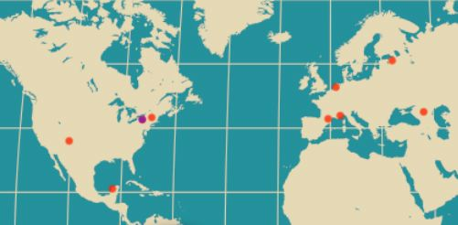

Hello! My name is Carly.
This is where I will talk about myself. It will include things like the fact that I have studied and travelled internationally. It will say something about how I have a varied work experience that have given me a range of different skills. Finally it will sum up that I am transitioning into a new career of web development, and how I hope to blend my interests and past experiences into the new career.
What Interests Me
- International Relations
- Advancement
- Fundraising
- Nonprofits and NGOS
- Web Design
- Web Development
Where I Learned How To Do
- Mount Holyoke College
- Leiden University
- Monroe Community College
- Launch Academy
Whom I've Worked With
What I'm Good At
- Problem Solving
- Logic
- Creativity
- Organization
- Attention to Detail
My Mad Skills
Programming
- HTML
- CSS
- Ruby
- Git
- Command Line
Software


- SPSS
Other Than English, I Speak
- French
- (and I can order a beer in Dutch, Russian and Spanish)
Things That Make Me Smile
- Travel
- Triva
- History & Geography
- Theater
- TV & Movies
- Music
- Arts & Crafts
- Interior Design Blogs
Oh, the Places I've Been
- Canandaigua, NY
- Toulon, France
- South Hadley, MA
- Ciudad del Carmen, Mexico
- Montpellier, France
- Tbilisi, Georgia
- St. Petersburg, Russia
- Leiden, The Netherlands
- Albuquerque, New Mexico